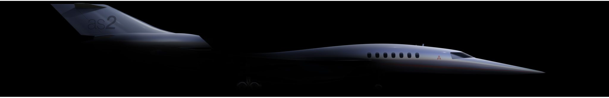

Summary :
Aerion Supersonic is a company working on the development of the AS2 aircraft and has the goal of ushering in a new era of supersonic flight. I worked at Aerion as a Summer Intern in the Systems Engineering Department. This internship was completed remotely. More information on Aerion can be found by following this link

My Contribution :
- Developed a Python code used for the Extended-range Twin-engine Operation Performance Standards (ETOPS) analysis of the AS2 aircraft down to kilometer level resolution. This code was an enabler for examining a range of planned flight paths to check for any which may be constrained by ETOPS regulations. This tool was handed off to Aerion Technologies for integration into the Aerion flight planning tool.
- Worked on the development of a roadmap for the implementation of Model Based Systems Engineering (MBSE). This task was focused on gaining an understanding of the current state of systems engineering at Aerion and beginning to formulate a goal state along with an associated roadmap. This was accomplished by conducting an extensive literature review of academic explorations of MBSE as well as various implementations of MBSE within engineering-focused companies.
- Performed extensive work related to requirements development including writing new requirements and reworking existing requirements. During this task, I worked with the systems engineering team to develop new requirements and refine existing requirements in conjunction with representatives from various IPTs.